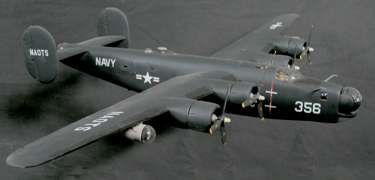
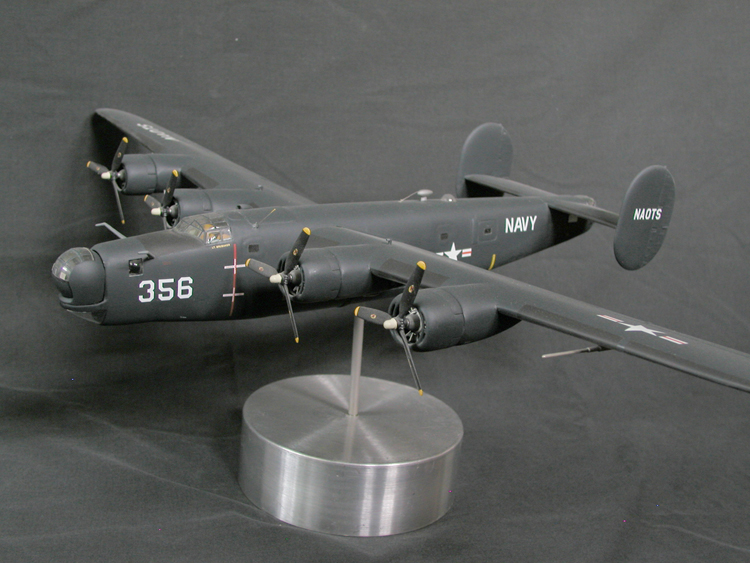

MODEL DETAILS— This Monogram 1:48th scale B-24J Liberator was modified to PB4Y-1 (redesignated P4Y-1in 1953) standard with a Koster KAE vacu-form conversion. This simple "nose-job" conversion from Koster was a very nice, simple piece of work.
During World War II, the United States Navy modified several Consolidated B-24 Liberator airframes to serve as long-range patrol aircraft. Early PB4Y-1's differed little from their Air Force kin, but later versions sported a more obvious upgrade in the form of the bulbous ERCO bow turret (Engineering and Research Corp.). After the war, many Navy P4Y-1 were refurbished and used for training, transport, and support duties. The markings of this P4Y-1 indicate that it operated out of the Naval Aviation Ordnance Test Station at Chincoteague (NAOTS).


Reprinted with permission from BatHead